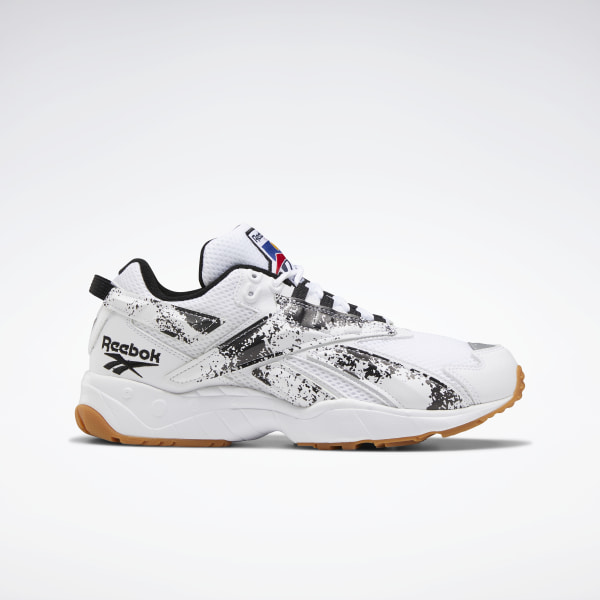

Кроссовки INTV 96

Описание товара
КРОССОВКИ С «ВЕКТОРОМ» ИЗ 1996 ГОДА
Характеристики товара
- Материал верха: текстиль и синтетические материалы
- Мягкая амортизация благодаря ромбовидной подошве Hexalite
- Легкая и удобная промежуточная подошва из ЭВА
- Стойкая к истиранию, прочная резиновая подметка обеспечивает отличное сцепление
- Страна-производитель: Вьетнам
- Материал: 60% Текстиль / 40% Синтетика
- Цвет модели: White / Black / Reebok Rubber Gum-08
- Номер модели: FV5471
Подробное описание товара
Ретробеговой стиль для улиц города. Дизайн кроссовок вдохновлен моделью 1996 года.
Комбинированный верх и вышитый логотип Reebok
«Вектор» создают глубину.
Подошва с ромбовидной структурой обеспечивает
комфортную амортизацию во время ходьбы.